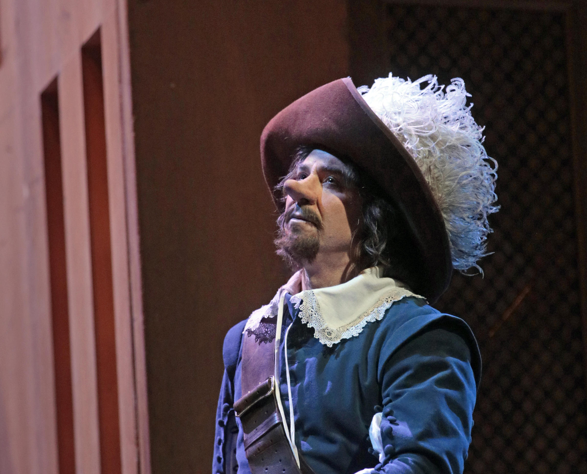
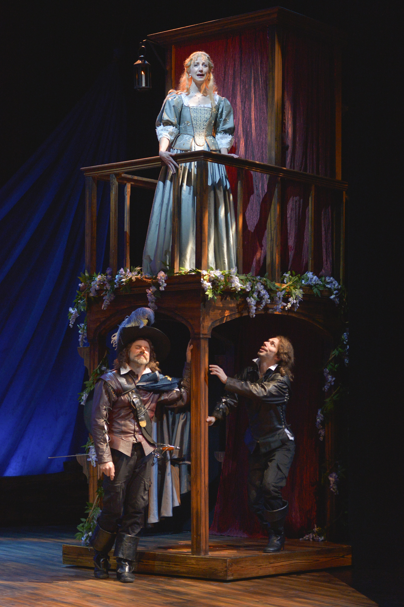
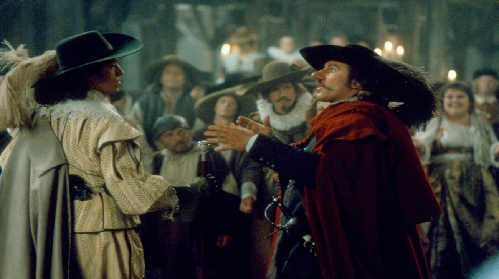
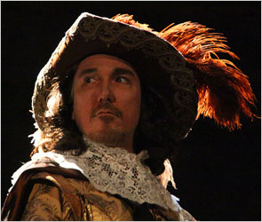
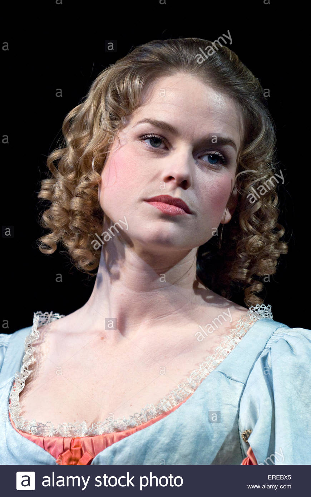
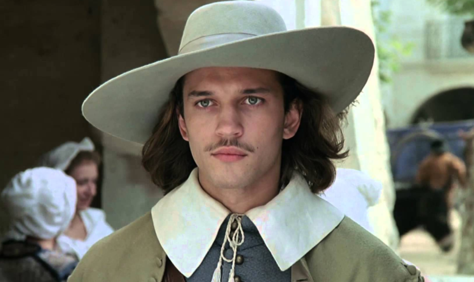

Une Histoire de Edmond Rostand... Racontée pour Mirko Terrazas
Cyrano de Bergerac

Introduction
Cyrano de Bergerac est un mousquetaire. Il fait partie de la compagnie des Cadets de Gascogne. Il est
tombé amoureux de la belle Roxane, sa cousine. Il a honte de son nez et se garde bien de révéler son
amour pour elle. Roxanne est promise au Marquis de Valvert, avec lequel Cyrano à un échange rhétorique
dont il sort vainqueur.
Impressionnée par le verbe de Cyrano, Roxane donne rendez-vous à son cousin à la rôtisserie de
Ragueneau. Cyrano est fou de joie, mais Roxane lui avoue qu’elle aime Christian de Neuvillette, un homme
qui s’apprête à rejoindre les Cadets de Gascogne. Roxanne demande à Cyrano de veiller sur lui.
Développement
Cyrano, bien qu'attristé, accepte et va jusqu'à aider Christian pour qui il a de la sympathie. En effet,
Christian n'est pas habile avec les mots et c'est Cyrano qui écrira les lettres d'amour qu'il envoie à
Roxanne.
Alors que Roxanne est sur son balcon, Cyrano souffle à Christian les mots d'amour qu'il doit lui
adresser. Roxanne est conquise et repousse temporairement les avances du Comte de Guiche. Elle épouse
Christian rapidement. Le Comte de Guiche, qui veut à la fois être l'amant de Roxanne tout en célébrant
son mariage avec De Valvert, arrive trop tard et déchaîne son courroux.
De Guiche envoie Cyrano, Christian et les Cadets de Gascogne à la bataille du siège d'Arras. Les
Espagnols encerclent les Gascons qui meurent de faim. Cyrano brave les lignes ennemis pour faire
parvenir les lettres d'amours qu'il écrit à Roxane de la part de Christian, tout en protégeant Christian
du danger.
Roxane est bouleversée par les lettres et va les rejoindre malgré la guerre. Christian comprend alors
que Roxane est amoureuse des mots d'esprit de Cyrano et que Cyrano aime Roxane. Christian demande à
Cyrano de tout avouer et se jette dans la bataille avec l'intention de mourir. Christian meurt dans les
bras de Roxane et Cyrano garde le silence. Il ne révèle pas leur secret.


Conclusion
15 ans passent. Roxane a rejoint un couvent parisien. Elle est toujours amoureuse de Christian. Cyrano
lui rend visite chaque semaine. Mais un jour il tombe dans une embuscade et est blessé à la tète.
Mourant, il demande à être conduit auprès de Roxane. Il lui lit dans le noir la dernière lettre de
Christian qu'elle garde toujours avec elle. Elle reconnaît la voix qu'elle avait entendue sur son
balcon... en outre la nuit est tombée et Cyrano récite par cœur la lettre. Il la lit avec une telle
ferveur et une telle facilité que Roxane découvre la "généreuse imposture" : des années durant, elle
n'était pas amoureuse de Christian sinon des mots d'amour de Cyrano. Roxane lui donne un baiser sur le
front, Cyrano se sent enfin aimé et meurt heureux.
Les Citacions
Le moins que l'on puisse dire du pouvoir, c'est que la vocation en est suspecte.
La vérité, juchée sur son socle d'erreurs.
La meilleure prière est la plus clandestine.
Les Personages
Homme puissant, commandant des cadets de
Gascogne. Il est
amoureux de Roxane.

Comte de Guiche
Jeune bourgeoise, cousine de Cyrano

Roxane
Soldat chez les cadets de Gascogne
Il est amoureux de Roxane

Cristian
Poète et soldat chez les cadets de Gascogne
Il est généreux et il aime Roxane.
Il a un très grand nez.